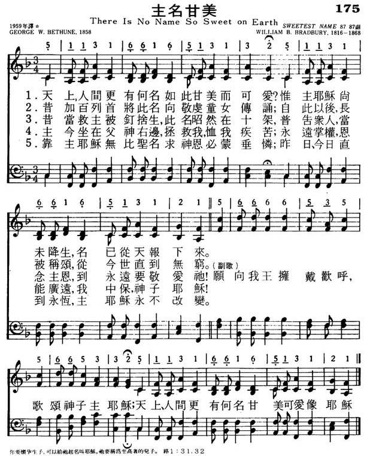
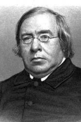

|
|
颂主新歌 |
|
1 There is no name so sweet on earth, Refrain: 2 And when he hung upon the tree, 3 So now, upon his Father's throne, 4 To Jesus ev'ry knee shall bow, 5 O Jesus, by that matchless name, |
1.天上人间更有何名如此甘美而可爱?
|
|
https://www.mred365.cn/szxg/7178.html  There Is No Name So Sweet on Earth
|
|
|
|
|


366 主名甘美 https://youtu.be/pyQI6mqcvNQ https://youtu.be/uaWUPUwTkSo - here is no name so sweet on earth - Gospel Hymns
https://youtu.be/yWjE9jDArMw https://youtu.be/aleXFdlbdsc - There Is No Name So Sweet On Earth — Organ
https://youtu.be/bNR4t7NX6iY
| Text: | There Is No Name So Sweet on Earth |
| Author: | George W. Bethune |
| Tune: | THE SWEETEST NAME |
| Composer: | William B. Bradbury |
| Short Name: | George W. Bethune |
| Full Name: | Bethune, George Washington, 1805-1862 |
| Birth Year: | 1805 |
| Death Year: | 1862 |
Bethune, George Washington,

D.D. A very eminent divine of the Reformed Dutch body, born in New York, 1805, graduated at Dickinson Coll., Carlisle, Phila., 1822, and studied theology at Princeton. In 1827 he was appointed Pastor of the Reformed Dutch Church, Rinebeck, New York. In 1830 passed to Utica, in 1834 to Philadelphia, and in 1850 to the Brooklyn Heights, New York. In 1861 he visited Florence, Italy, for his health, and died in that city, almost suddenly after preaching, April 27, 1862. His Life and Letters were edited by A. R. Van Nest, 1867. He was offered the Chancellorship of New York University, and the Provostship of the University of Pennsylvania, both of which he declined. His works include The Fruits of the Spirit, 1839; Sermons, 1847; Lays of Love & Faith, 1847; The British Female Poets, 1848, and others. Of his hymns, some of which liave attained to some repute, we have:—
Tune Information
| Title: | [There is no name so sweet on earth] (Bradbury) |
| Composer: | William B. Bradbury (1861) |
| Meter: | 8.7.8.7 D |
| Incipit: | 51131 66165 13132 |
| Key: | F Major |
| Copyright: | Public Domain |
| Short Name: | William B. Bradbury |
| Full Name: | Bradbury, William B. (William Batchelder), 1816-1868 |
| Birth Year: | 1816 |
| Death Year: | 1868 |
William Bachelder Bradbury USA 1816-1868. Born at York, ME, he was raised on his father's farm, with rainy days spent in a shoe-shop, the custom in those days. He loved music and spent spare hours practicing any music he could find. In 1830 the family moved to Boston, where he first saw and heard an organ and piano, and other instruments. He became an organist at 15. He attended Dr. Lowell Mason's singing classes, and later sang in the Bowdoin Street church choir. Dr. Mason became a good friend. He made $100/yr playing the organ, and was still in Dr. Mason's choir. Dr. Mason gave him a chance to teach singing in Machias, ME, which he accepted. He returned to Boston the following year to marry Adra Esther Fessenden in 1838, then relocated to St. Johns, New Bruswick. Where his efforts were not much appreciated, so he returned to Boston. He was offered charge of music and organ at the First Baptist Church of Brooklyn. That led to similar work at the Baptist Tabernacle, New York City, where he also started a singing class. That started singing schools in various parts of the city, and eventually resulted in music festivals, held at the Broadway Tabernacle, a prominent city event. He conducted a 1000 children choir there, which resulted in music being taught as regular study in public schools of the city. He began writing music and publishing it. In 1847 he went with his wife to Europe to study with some of the music masters in London and also Germany. He attended Mendelssohn funeral while there. He went to Switzerland before returning to the states, and upon returning, commenced teaching, conducting conventions, composing, and editing music books. In 1851, with his brother, Edward, he began manufacturring Bradbury pianos, which became popular. Also, he had a small office in one of his warehouses in New York and often went there to spend time in private devotions. As a professor, he edited 59 books of sacred and secular music, much of which he wrote. He attended the Presbyterian church in Bloomfield, NJ, for many years later in life. He contracted tuberculosis the last two years of his life.
John Perry

Words: George Washington Bethune (b. Mar. 18, 1805; d.
Apr. 27, 1862)
Music: William Batchelder Bradbury (b. Oct. 6, 1816; d.
Jan. 7, 1868)
Links:
Wordwise Hymns
The Cyber
Hymnal
Hymnary.org
Note: There is little doubt that American Pastor George Washington Bethune (1805-1862) was named after the nation’s first president, George Washington, who died in 1799. Bethune was offered the posts of chancellor of New York University, and provost of the University of Pennsylvania, but he refused both, preferring to continue in pastoral ministry. He was also the author of several books, and a number of hymns.
Babies are given names for all kinds of reasons. Sometimes the child is named after a parent, or other relative. Sometimes, parents select a name simply because it’s different, or interesting. Other times the name is chosen for its inspiring meaning. One of the first questions coming up when we meet a parent with a new baby is, “What’s his (or her) name?”
Years ago I spoke with a senior whose parents had decided to call her Eugenia. From a Greek word meaning nobility, it perhaps would inspire her to lofty goals and moral excellence. Lovely. But a problem arose when her father went to register the birth and the baby’s name. Nobody had told him how to spell Eugenia. A very proud man, rather than ask for help, he simply put down what he thought was right. That is why my friend’s official name is Engine!
Many names in history have become almost synonymous with the person’s deeds. Whether it’s Christopher Columbus, or Thomas Edison, most will associate specific things with the name. The same can be said for many Bible names. Noah, Samson, or Jonah, each calls to mind certain things.
For Christians, the name of Jesus has a significance above all others. It’s found over 940 times in the New Testament, often in combination with other titles such as Jesus Christ, or the Lord Jesus. Jesus is the Greek form of the Old Testament Hebrew name Joshua, which means “Jehovah [the Lord] is Salvation.”
As the New Testament begins, we are given, “The book of the genealogy of Jesus Christ, the Son of David, the Son of Abraham (Matt. 1:1). From this we learn that the human ancestry of Jesus can be traced back to King David, and even further back to Abraham, the founding father of the nation of Israel.
The work of salvation is specifically attached to His prophesied future accomplishments. As the account unfolds, we learn that Jesus would be born of a virgin named Mary (Matt. 1:18), and her betrothed husband Joseph was told, “You shall call His name JESUS, for He will save His people from their sins” (vs. 21).
This close association of the name Jesus with salvation continues through the New Testament. In Titus 3:6 He is called “Jesus Christ our Saviour,” and in Second Peter 1:11 “our Lord and Saviour Jesus Christ.” John says, “The Father has sent the Son as Saviour of the world” (I Jn. 4:14).
The Bible is also clear that this One is deity, God the Son come to earth and taking on our humanity. He is called “our great God and Saviour Jesus Christ” in Titus 2:13. And in Second Peter 1:1, “our God and Saviour, Jesus Christ.” Only as Man could He die for the sins of human beings, and only in the perfection of His deity could He be undeserving of death for His own sins, and be Conqueror over death on our behalf.
“He humbled Himself and became obedient to the point of death, even the death of the cross. Therefore God also has highly exalted Him and given Him the name which is above every name, that at the name of Jesus every knee should bow, of those in heaven, and of those on earth, and of those under the earth, and that every tongue should confess that Jesus Christ is Lord, to the glory of God the Father” (Phil. 2:9-11).
Our hymnody often reminds us of the meaning and preciousness of the name of Jesus. The present one is an example, a simple gospel song written in 1858 by George Bethune. (Note: As of writing this blog, stanza five below was not included in the Cyber Hymnal. It alludes to the Philippians passage quoted above.)
CH-1) There is no name so sweet on earth,
No name so sweet in heaven,
The name, before His wondrous birth
To Christ the Saviour given.
We love to sing of Christ our King,
And hail Him, blessèd Jesus;
For there’s no word ear ever heard
So dear, so sweet as “Jesus.”
CH-4) So now, upon His Father’s throne,
Almighty to release us
From sin and pain, He gladly reigns,
The Prince and Saviour, Jesus.
5) To Jesus every knee shall bow,
And every tongue confess Him,
And we unite with saints in light
Our only Lord to bless Him.
CH-5) O Jesus, by that matchless name,
Thy grace shall fail us never;
Today as yesterday the same,
Thou art the same forever.
Questions:
1) How does it make you feel when you hear the name of Jesus profaned
and used as a swear word?
2) What have you done about this?